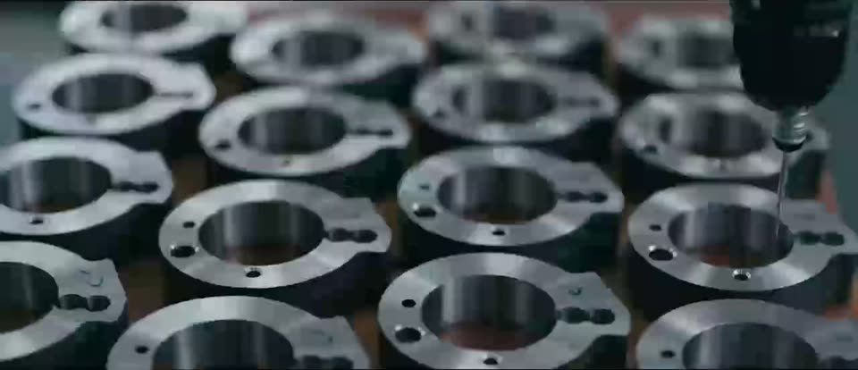

Precision components
Pillar 01
Stamped, machined and welded parts for home appliance, automotive and industrial customers. Dies and fixtures are designed and tried out in our own tool room, on presses from 25 to 400 tonnes.
- Since
- 2002
- Presses
- 25–400 T